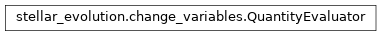
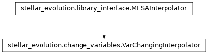

stellar_evolution.change_variables module¶
Class Inheritance Diagram¶
Allows finding mass and age given other properties at fixed [Fe/H].
-
class
stellar_evolution.change_variables.QuantityEvaluator(interpolator, feh, min_mass=0.0, max_mass=inf, **reference_values)[source]¶ Bases:
objectEvaluate stellar quantities fixing out of range issues etc.
-
class
stellar_evolution.change_variables.VarChangingInterpolator(grid_feh, grid_masses, grid_ages, **kwargs)[source]¶ Bases:
stellar_evolution.library_interface.MESAInterpolatorEnhance interpolators to find mass and age given other properties.
-
grid¶ A structure with attributes: - masses:
Stellar masses of the grid nodes at which the dependent variables are known.
- ages:
Stellar ages of the grid nodes at which the dependent variables are known.
- feh:
[Fe/H] values of the grid nodes at which the dependent variables are known.
- weights:
The weights to use when interpolating the grid to a specified [Fe/H].
- teff (may not be present):
The stellar effective temperature in Kelvin at the grid nodes.
- logg (may not be present):
The log10(stellar gravity in cgs) at the grid nodes.
- lum (may not be present):
The stellar luminosity, in solar luminosities at the grid nodes.
- rho(may not be present):
The stellar density in cgs at the grid nodes.
The first index for each variable or the weights attribute is mass, followed by age and finally [Fe/H].
Notes
The grid must be fine enough to ensure that no grid cell entirely contains an iso-contour of either dependent variable where interpolation will be attempted.
-
__init__(grid_feh, grid_masses, grid_ages, **kwargs)[source]¶ Prepare an interpolator able to find mass, age from other quantities.
Keyword only arguments: see MESAInterpolator.__init__
Returns: None
-
_add_grid_variable(variable)[source]¶ Adds another dependent variable to self.grid.
- Parameters
variable – The name of the variable to add. See class documentation for details.
- Returns
None
-
static
_bilinear_coef_equations(m_low, m_high, age_low, age_high)[source]¶ Equations for the coef. of a bi-linear func. over mass/age cell.
- Parameters
m_low – The lower mass boundary of the cell.
m_high – The upper mass boundary of the cell.
age_low – The lower age boundary of the cell.
age_high – The upper age boundary of the cell.
- Returns
The matrix defining the equations for the coefficients of a bi-linear function over the specified cell.
- Return type
2-D scipy array
-
_define_var_change_grid(feh, masses, ages)[source]¶ Create a new grid with the given locations of the nodes.
Creates self.grid with all arguments as same-name members and an additional weight member containing an empty array to fill with weights later when grid variables start to be calculated. Also creates self._defined_weigths to keep track if weights have been previously initialized.
- Parameters
feh – The [Fe/H] values at which to tabulate the dependent variables.
masses – The stellar masses at which to tabulate the dependent variables.
ages (-) – The ages (in Gyrs) at which to tabulate the dependent variables.
- Returns
None
-
static
_find_bilinear_roots(coef)[source]¶ Return the simultaneous roots of two bilinear functions.
- Parameters
coef – The coefficients of the two bilinear functions. Should be a 2-D scipy array with the outer index iterating over the function and the inner indices iterating over the coefficients of the corresponding bilinear function.
- Returns
A list of 2-tuples contaning the simultaneous zeros of the two functions.
- Return type
-
_find_candidate_cells(feh, **kwargs)[source]¶ Identify grid cells possibly containing a solution.
- Parameters
feh – See change_variables().
kwargs – See change_variables().
- Returns
- Matching the shape of grid variables with True entries for
grid cells which may contain a solution.
- 3-D array:
The last two dimensions matching the shape of grid variables, consisting of two slabs giving the difference from the target values of each of the grid variables used for variable change.
- Return type
2-D array
-
_get_quantity(name, mass, feh)[source]¶ Return a quantity at the given mass and [Fe/H].
- Parameters
name – The name of the quantity to return.
mass – The stellar mass for which this quantity should apply
feh – The [Fe/H] for which this quantity should apply.
- Returns
A callable returning the value of the quantity at a given age. Also has min_age and max_age attributes defining the range over which it is defined.
- Return type
callable
-
_interpolate_grid_variable(var_name, feh)[source]¶ Interpolate one of the grid variables to a specified [Fe/H].
- Parameters
var_name – The name of the variable to interpolate.
feh – The [Fe/H] value to inteprolate to.
- Returns
The interepolated variable at the grid masses and ages.
- Return type
2-D scipy array
-
change_variables(feh, **kwargs)[source]¶ Change from two of (lum, rho, logg, Teff) to mass & age.
- Parameters
feh – The value of [Fe/H] at which this variable change is taking place.
kwargs –
must be exactly two of the following:
- teff:
The effective temperature to match.
- logg:
The log10(gravitation acceleration) to match.
- lum:
The luminosity to match.
- rho:
The density to match.
- Returns
The mass and age at which the keyword arguments are matched as list of tuples of (mass, age).
- Return type
-
search_near(mass, age, feh, **kwargs)[source]¶ Search for mass & age near the given ones to match two other vars.
- Parameters
mass – The value of the mass to search near.
age – The value of the age to search near.
feh – The value of [Fe/H] at which the variable change is taking place.
kwargs –
must be exactly two of the following:
- teff:
The effective temperature to match.
- logg:
The log10(gravitation acceleration) to match.
- lum:
The luminosity to match.
- rho:
The density to match.
- Returns
The mass and age where the given dependent variables are matched.
- Return type
-